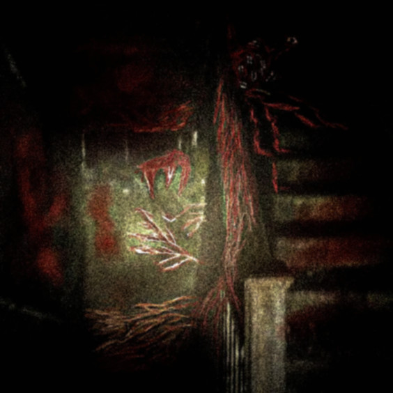

Este arquivo é mantido por Florense (eu). Se você encontrou isso, é porque eu quis que você encontrasse.
Comunicados recentes
O prédio iluminado ainda está de pé
Saímos antes que pudessem nos encontrar, mas as lâmpadas ficaram. Quem precisar de abrigo: o último andar continua acessível pela escada de serviço nos fundos. Há mantimentos escondidos atrás do painel elétrico do 7º andar. Não acenda fogo — as luzes são suficientes. Não peguem o objeto deixado no terraço, é algo que eu quero que a MoonCompany encontre, sei que eles vão lá. As luzes serão acessas novamente após eles saírem, preciso mostrar algo a eles...
Sobre os homens da companhia
Nem todos são inimigos. Há soldados lá dentro que não escolheram estar onde estão, assim como muitos de nós não escolhemos nada disso. Se cruzar com alguém fardado que demonstre hesitação, ofereça água antes de qualquer outra coisa. A hesitação é o começo.
Para os 63 que estavam nas cabanas
Sabemos o que aconteceu. Não sabemos onde vocês estão agora, se estão em algum lugar. Mas guardamos seus nomes. Cada um deles. Isso é o mínimo que podemos fazer.
Se você acaba de chegar
Bem-vindo. Não perguntamos de onde você veio nem o que você fez para sobreviver até aqui. O passado pertence a você. O que importa é o que fazemos agora, juntos. Procure qualquer pessoa com um trapo amarelo no pulso, eles podem te ajudar a se situar.
Pessoas que formam isso aqui
Nomes reais só com consentimento. Usamos apelidos por segurança.
Como tentamos viver
Não são ordens. São escolhas que fazemos todo dia. Quem não conseguir cumprir alguma delas, conversa com alguém, ninguém é expulso por ser humano.
Relatório sobre as nossas atividades
RM-001
Inicialmente, eu achava que isso iria ser resolvido rápido pelo Nashell, que ele iria perceber a besteira que fez, que ele fosse voltar atrás ou no mínimo ajudar. Eu não podia estar mais errado... Invés de tentar curar as pessoas da doença que ele mesmo amaldiçoou o mundo com, ele usa os órgãos das pessoas infectadas para continuar extraindo minério, são quantidades mínimas mas ele faz questão de cada grama para aquela garota. A organização continua tendo influência e fundos por conta de Vance, ele é um homem perverso, faz qualquer coisa pelo dinheiro, acoberta toda e qualquer podridão de Nashell. Eu fazia parte também, mas agora eu não quero mais estar com pessoas assim. A únicas pessoas que eu via como boas naquele lugar era a Dra. Charllote e o Dr. Elias... Eu não sei o paradeiro de nenhum deles, mas conversei com Charllote antes dela sair da companhia, ela falava sobre querer encontrar Alice para curar a garota...
RM-001.2
RM-002
RM-003
RM-004
RM-005
RM-006
RM-007
RM-008
RM-008
RM-009
Nós saímos do prédio no final, e agora estamos nos abrigando em uma zona industrial, nós temos minério suficiente para fabricarmos mais uma lâmina e algumas lâmpadas, mas isso não é algo sustentável no longo prazo. Precisamos fazer algo sobre a corporação e seu monopólio de mineral lunar. Se não, teremos matado todos os infectados de variante inicial e não teremos minério suficiente para nos defendermos de coisas como aquele demônio branco enorme. Mas eu não posso buscar vingança, não posso colocar mais vidas em risco, já perdemos muitos, eu só quero que possamos nos defender propriamente.
RM-010
Acho que não relatei isso aqui ainda, mas como somos um grupo grande, costumamos revezar os turnos para dormimos enquanto tem outros acordados, e estava na minha vez de ficar acordado naquela hora... Eu tava olhando para uma região de mata fechada, não estava prestando tanta atenção assim, quando eu percebi que desde o momento que eu acordei até o momento que eu fui dormir e acordei de novo, tinham um par de luzes brancas lá no fundo, sempre mirando para a fábrica. Eu me levantei pra tentar enxergar melhor, e quando eu dei o primeiro sinal de ter percebido, aquela coisa branca enorme de antes se moveu tão rápido que eu nem soube que direção ela foi exatamente. Eu imediatamente acordei todos e falei sobre aquela coisa estar na espreita, a mulher me disse que já conhecia aquele bicho e que ele aparentemente era "amigo" das crianças, mas que enxergava a amizade de uma forma distorcida, então devia estar apenas seguindo as mesmas. Quando souberam do que se tratava, os sobreviventes da floresta entraram em pânico, alguns diziam que deveriamos deixar as crianças e irmos embora em segurança, outros eram completamente opostos a isso e diziam que com duas lâminas nós poderiamos ferir aquele monstro. Eu tomei a decisão de manter as crianças, e reforcei que nós não iremos abandonar elas enquanto tivermos capacidade de as proteger, mas que para evitar de sermos vítimas daquele demônio, precisavamos voltar para algum prédio que nos daria mais noção de se tem algo próximo ou não. Alguns concordaram, outros disseram que seria pedir para morrer e escolheram sair do grupo naquele momento... Quando os que escolheram sair se afastaram mata adentro, ouvimos sons de gritos e uma agitação vinda de lá, quando tentamos entrar para olhar, havia tido um banho de sangue em questão de segundos... Aquela coisa tinha matado cerca de 3 pessoas em questão de segundos, haviam outras 2 vivas ainda mas com seus fígados praticamente expostos no chão agonizando... Nós sabíamos que não tinhamos como as salvar, então apenas acabamos com seu sofrimento mais rápido.
RM-011
RM-012
RM-012
RM-013
Imediatamente ao dizerem isso, os homens armados do nosso grupo levantaram suas armas em direção a eles, que se assustaram e perguntaram oque tinha acontecido, eu falei que naquela floresta tem um infectado que a esse ponto deve ser uma variante avançada da infecção, composto completamente de tendões e que nunca permitira que eles saíssem da floresta sem baixas. Eles insistiram dizendo que não haviam visto nada disso e que a floresta era quase que totalmente silenciosa, eles só relatavam animais agindo estranho, mas isso poderia ser explicado pela ausência da lua. Eu não podia se eles estavam falando a verdade ou não, mas também não podia arriscar matar 7 pessoas por uma dúvida, então os deixei no 6º andar sob a constante vigilância de um grupo armado enquanto nós iriamos checar a história deles. Pretendo ir com um grupo de mais 3 pessoas até a floresta para checar o estado dela. Caso não hajam mais perigos lá, seria o lugar ideal para habitarmos.
RM-012
RM-013

RM-014
RM-015
Outro acontecimento importante é que os membros daquela facção CSN entraram en contato conosco, eram 19 no total. Eles falaram sobre não estarem conseguindo lidar muito bem com toda a situação sozinhos, e que precisavam de mais pessoal para ter real liberdade. Eu expliquei sobre nosssos objetivos e o motivo de estarmos fazendo oque fazemos, e aparentemente eles concordaram o suficiente para se aliarem conosco. Somando todos os membros, somos agora 43, eles tem essa vontade de colocar nomes em todos os grupos, oque é irrelevante para a maioria mais antiga comigo, mas se é o desejo deles tudo bem, acho que nomearam nosso grupo como "Força Unificada pela Paz" ou algo genérico assim.
RM-016
Quando chegamos no prédio principal novamente, eu convoquei uma reunião para entender quem havia nos denunciado, eu não queria expulsar nem punir ninguém, só queria saber o motivo de terem nos denunciado. Depois da minha pergunta, a maioria esmagadora ficou em silêncio, ninguém ousou falar nada, mas sei que no fundo todos conseguiam entender quem possivelmente fez isso tendo em vista que estamos em guerra contra a organização mais forte que existe no mundo atualmente... Eu reafirmei a eles que seja lá quem tiver feito isso, não será punido por ter sido humano, e mesmo assim ninguém se entregou. Apesar disso, acredito que talvez as diferenças tenham sido resolvidas com o silêncio de todos.